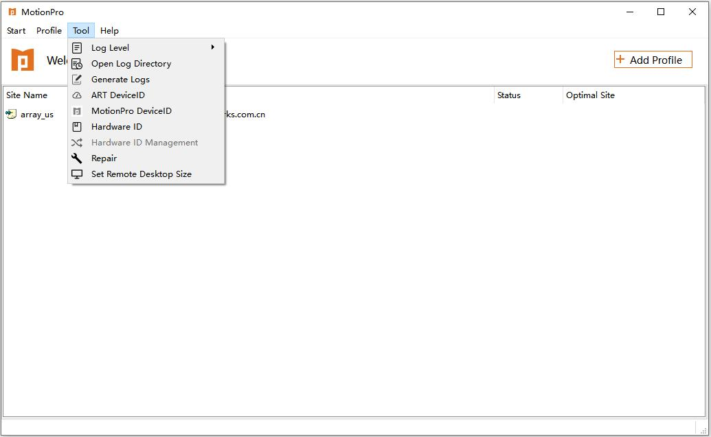

Array Networks MotionPro Client
Contents
About Array Networks MotionPro Client
Array Networks MotionPro Client is a tool that should be used together with the Array Networks AG series products, which enables you to access websites, network resources and even sensitive data of your business through a secure way. The client is easy to use and can be configured in just a few steps. After that, you only need to click the Connect option in the Start menu to enjoy your secure online experience.
Main Window
The main window of the client provides basic information of existing virtual sites. To start VPN, select a virtual site and click the Connect option in the Start menu in the main window. You can also connect to VPN by right clicking in any place in the main window (For more details on this operation, see the section "Quick Start").
Menu
The menus in the main window provide all the functions that you may need.
Start
This menu provides basic operations related to the VPN.
Connect
You can click this menu option to connect to a selected virtual site. You will connect to the default virtual site if you don't select a virtual site.
Disconnect
After you have connected to a virtual site, you can click this menu option to disconnect the VPN.
Status
After you have connected to a virtual site, you can click this menu option to view the status of the VPN.
Options
You can click this menu option to specify advanced settings of the VPN.
Tunnel
You can click this menu option to set up VPN Tunnel Protocol and SSL Protocol. VPN Tunnel Protocol supports three values: UDP, TCP and Default. SSL Protocol supports four values: SM2v11 , TLSv1 , TLSv12 and SSLv3 .
Exit
You can click this menu option to disconnect the current connection and exit the VPN client.
Profile
This menu provides menu options related to management and configuration of virtual sites.
Add
You can click this menu option to create a profile. A profile records information about a virtual site, such as the site name and the site address.
Edit
You can click this menu option to edit the existing profiles.
Delete
You can click this menu option to delete profiles.
Set As Default
You can click this menu option to specify a default profile. After you start VPN, the default profile will automatically be loaded. You only need to click the Connect option in the Start menu to connect to the default virtual site.
Detect Virtual Site
You can click this menu option to detect the Optimal Site. The detection information includes Site IP and Response Speed.
Change Password
After you have connected to a virtual site, you can click this menu option to change the password.
Import
You can click this menu option to import configurations from an .ini file.
Export
You can click this menu option to export current configurations to an .ini file.
Tools
This menu provides useful tools for the client.

Log Level
You can click this menu option to set the log level, which controls contents saved into the log file.
Open Log Directory
You can click this menu option to open the directory of the log file.
Generate Logs
You can click this menu option to generate logs. Compress the log file and save it to the specified path.
ART DeviceID
You can click this menu option to generate the ART DeviceID. This function is only provided in Windows OS.
MotionPro DeviceID
You can click this menu option to generate the MotionPro DeviceID. This function is only provided in Windows OS.
Hardware ID
You can click this menu option to generate the Hardware ID.
Repair
You can click this menu option to clear cached DesktopDirect icons or restore VPN to default settings.
Set Remote Desktop Size
You can click this menu option to customize the size of the remote desktop and the size of the desktop icon.
Help
This menu provides additional information about the client.

About
You can click this menu option to view software-related information.
Help
You can click this menu option to obtain information about how to use the client.
You can start the VPN quickly in the main window by performing the following steps:
Create a virtual site if no virtual site is available.
Right click in any place in the main window as shown in the following figure and select Add.
The Profile dialog box will be displayed. In this dialog box, you can configure a virtual site. The same dialog box will be displayed when you add a virtual site by clicking Add in the Profile menu.
Enter required information and click Save to add the virtual site.
Note: For the configuration guide, see the section "Virtual Site Management".
Establish the connection.
After adding a virtual site successfully, right click the virtual site and select Connect to establish the VPN.
Note: Connection may fail to be established due to incorrect network or virtual site configuration. When this problem occurs, please contact your network administrator or Array Networks Customer Support.
"Connecting" will be displayed when a VPN is connecting. If errors occur, you can find related information in the status bar of this window. If the VPN is established successfully, the client will be minimized to the system tray. You can open the client by clicking on the client icon [A] in your system tray.
If a VPN is established, "Connected" will be displayed. If it is a VPN virtual site, the virtual site name and host IP address will be displayed in the main window. If it is a DesktopDirect virtual site, the site information will be displayed in the Site tab and remote desktops will be displayed the Desktop tab of the main window.
If the VPN is established successfully, you can view the status information, DNS and network resources of the current VPN by clicking status in the Start menu.
You can create, edit and delete profiles of desired virtual site by right clicking in the main window.
Alternatively, you can use the options in the Profile menu to create, edit and delete profiles.
Adding Virtual Sites
To add a virtual site, click Add in the Profile menu. The Profile dialog box (as shown in the section "Quick Start") will be displayed.
Site Name and Host are mandatory. You need to type the host name or IP address of a virtual site. Note that the typed site name should not be identical to the name of any existing virtual site.
The port of the virtual site has already been set to 443, which is the default port for SSL. Port 443 is the most commonly used SSL port. You can change it if required. Note that other ports may not work as well as port 443. If you use a port that has been used for other purposes to establish the SSL connection, port 80 for example, both your HTTP client and SSL client would become down. To make sure that all functions run properly, you may need configured additional information about your device and network setting, which is beyond the scope of this document.
You can unfold the Advanced item and click the Authentication Type drop-down list box to choose the authentication type of the virtual site.
By default, the proxy disabled and you can connect to a virtual sites “directly”. If you need to connect to virtual sites using proxy, please unfold the Network item, as shown in the following figure.

Just as the proxy configuration of IE, you are required to type the proxy server's IP address and port number in the Proxy Host textbox. If you want to use the default system setting, you can select the Auto Detect radio button.
Editing Virtual Sites
Steps of editing a virtual site are similar to those of adding a virtual site. To edit a virtual site, right click the virtual site and choose Edit. Alternatively, click Edit in the Profile menu. Then perform the same steps as in adding a virtual site.
Deleting Virtual Sites
To delete a virtual site, right click the virtual site and choose Delete. Then click Yes in the confirmation dialog box. You can achieve this goal also by clicking Delete in the Profile menu.
The MotionPro client for Windows OS provides additional advanced settings to meet your requirements. To perform advanced settings, click Options in the Start menu as shown in the following figure.
Please note that inappropriate settings will have a severe impact on network performance. It is recommended to consult your network administrator before you set or modify any of these options.
Auto Login to Windows
If you select this check box and type the Windows user-name and password, you will log into the Windows automatically when the Windows starts. If you select Lock Screen After Auto Login, the Windows will lock the screen after auto login.
Auto Start on Window Start
If you select this check box, when you start Windows, the client will automatically start based on the current network environment. If you select Intranet and Non-intranet, when you start Windows, the client will automatically start regardless of the network environment (intranet or non-intranet). If you select Only Non-intranet, the Intranet Address and Port should be set. When you start Windows, the client will automatically start only when the network environment is Non-intranet .
Auto Connect on Launch
If you select this check box, the client will automatically connect to the virtual site upon startup.
Enable DNS Proxy
If you select this check box, the DNS proxy will be enabled. By default, the DNS proxy is enabled.
Enable Advanced Hostmap
If this check box is selected, the client will map the configuration of Hostmap to the system file Hosts. This can speed up the DNS resolution process. By default, the function is disabled.
Enable Advanced Redirect
If this check box is selected, the client will add the IP address 127.0.0.1 to the DNS server list of the local network adapter (127.0.0.1 is the primary DNS server), so the client can forcibly forward all DNS traffic to the VPN tunnel. By default, the function is disabled.
Virtual Network Card Options
Sets MTU, TCP ACK Frequency, and Enable Local Subnet Access by Virtual Network Card Options.
MTU
Sets the Maximum Transmission Unit for your network environment.
TCP Ack Frequency
Sets the frequency of the data package of TCP ACK.
Enable Local Subnet Access
Enables or disables the local subnet access function when the local subnet access is enabled on the AG appliance.
RSA Certificate Storage Locations
Sets the certificate storage location. Three values are supported: Current User, Local Computer and All.
If you have any question about how to use Array Networks MotionPro Client, or encounter any error while using it, please feel free to contact Array Networks Customer Support anytime. We will guide you through the usage and error fix. Your advice on our products and service are always welcome.
General Contact Info
Array Networks, Inc.
1371 McCarthy Blvd.
Milpitas, CA 95035
Phone: (408) 240-8700
Toll Free: 1-866-MY-ARRAY
Fax: (408) 240-8753
Email: info@arraynetworks.net
Support
Toll Free: 1-866-MY-ARRAY
Email: support@arraynetworks.net